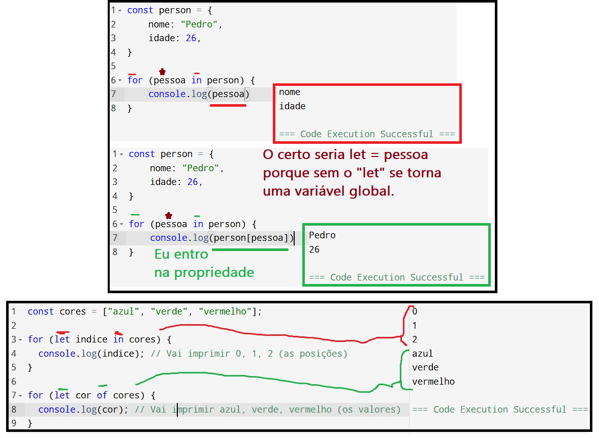
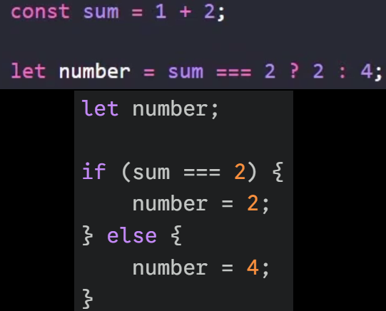
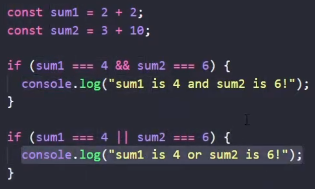

Things I learned in JavaScript

Arrow functions are used to shorten javascript functions.
- Always: Delete the word function, add "=>" after the parameters.
- If the function has only one parameter: Delete the parentheses around the parameter.
- Ps.: You cannot delete the parentheses if there are more than one parameter or if there are no parameters.
- If the function has only one line of code: Delete the curly brackets and the "return".

Template literals are used to create strings with embedded expressions.
- Always: Use backticks (`) instead of quotes (') or double quotes (").
- To embed an expression: Use the syntax ${expression} inside the backticks.

Different types of data can be stored inside arrays.
- In the example, some elements are strings, others are numbers, and the last one is boolean.

"For in" isn't as simple as I had thought.
- - If you don't use brackets, you'll only get the keys (nome and idade, in this case)
- If you use it in an array, it will return the indices of the array elements.
- To get the values of an array, use "for of" instead of "for in".

Ternary operations are a shorthand way to write if/else statements.
- It has the syntax: condition ? value_if_true : value_if_false
- In this case, if number is perfectly equal to 2, "then" it returns "2", otherwise it returns "not 4"

The && and || operators
- The && operator returns the first falsy value or the last value if all are truthy.
- The || operator returns truthy if at least one operand is truthy.